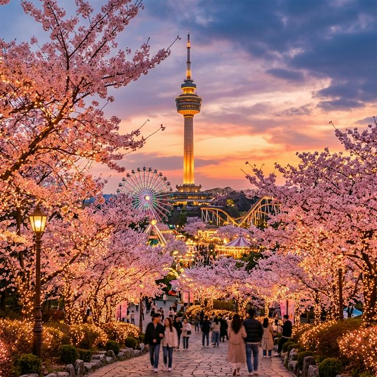
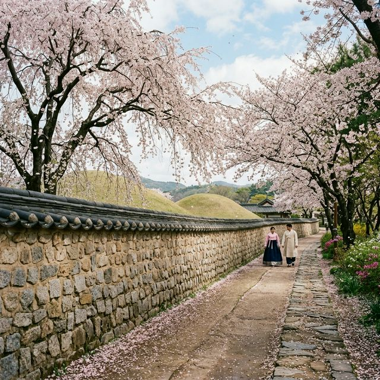
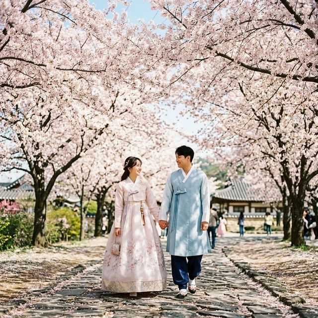

2026 대구·경북 벚꽃 투어: 이월드 별빛 축제 vs 대릉원 돌담길 완벽 비교 분석
수도권보다 열흘가량 앞서 봄소식을 전하는 남부 지방, 그중에서도 대구와 경북 지역은 대한민국에서 가장 다이내믹한 벚꽃 여행을 즐길 수 있는 권역입니다. 올해 4월 초, 만개 시기가 절묘하게 겹치면서
대구의 상징 '이월드(E-World) 별빛 벚꽃축제'의 현대적인 화려함과, 신라 천 년의 수도 '경주 대릉원 돌담길'의 고즈넉한 한국미를
동시에 경험하려는 여행객들이 급증하고 있습니다. 도심 한가운데 우뚝 선 83타워와 놀이기구가 만들어내는 다이내믹한 피사체, 그리고 수백 년 된 고분군을 따라 이어진 전통 한복 데이트 코스까지. 분위기가
극명하게 다른 두 명소의 핵심 포토존, 실시간 주차 정보, 그리고 KTX 동대구역-신경주역을 잇는 최적의 1박 2일 동선 팩트 가이드를 제공합니다.

▲ 대구의 랜드마크 83타워를 배경으로, 수십만 개의 LED 전구가 벚꽃을 비추는 이월드 별빛 벚꽃축제의 화려한 전경입니다. (ratio 1:1)
1. 화려함의 극치: 대구 이월드 '블라썸 피크닉' 야간 개장 팩트 체크
여의도 윤중로 벚꽃보다 무려 3배가량 많은 수의 벚나무가 심어진 대구 이월드는 그 압도적인 규모 덕분에 '전국 최대 야간 벚꽃'이라는 타이틀을 보유하고 있습니다. 특히
2026년 축제는 밤 9시 30분까지 연장되는 '나이트 라이트업' 행사가 핵심입니다. 빛바랜 흰꽃이 아닌 조명을 받아 진분홍 브롬톤 빛을 내뿜는 벚꽃 터널은 스마트폰 카메라로 대충 찍어도 화보가
완성됩니다.
💡 이월드 현지인 추천 비밀 포토존 TOP 3
- 83타워 메인 스트리트 4번 구역: 빨간색 런던 2층 버스와 핑크빛 벚꽃이 어우러져 유럽풍의 자태를 자아냅니다. 여기가 웨이팅이 가장 긴 메인 스팟입니다.
- 회전목마 앞 피크닉 존: 몽환적인 놀이공원의 보케(빛망울) 효과를 살려 인물 사진을 찍기에 완벽한 장소입니다. 일몰 직후(저녁 6시 30분경)가 가장
아름답습니다.
- 케이블카 스카이뷰: 놀이기구 탑승권을 활용해 머리 위가 아닌, '발아래로 펼쳐진 거대한 핑크빛 바다'를 감상하는 시크릿
포인트입니다.
대구 시민들의 필수 우회팁! 이월드 정문 주차장은 오후 2시 이전에 가지 않으면 만차를 각오해야 합니다. 대신 도보 15분 거리의 지하철 두류역 15번 출구 인근
공영주차장이나 두류공원 문화예술회관 쪽에 주차 후 걸어가는 것이 체력을 아끼는 지름길입니다.

▲ 경주 대릉원을 감싸고 있는 고풍스러운 전통 돌담 위로 벚꽃 잎이 흩날리는 평화로운 봄의 정취입니다. (ratio 1:1)
2. 시간 여행자의 로맨스: 경주 대릉원 돌담길과 황리단길 아날로그 데이트
눈부신 조명이 이월드의 매력이라면, 경주 벚꽃의 매력은 '역사와 자연이 만든 완벽한 조화'입니다. 특히 황남동 고분군을 둘러싸고 있는 대릉원 돌담길
구역은 2026년 봄, 차량 진입을 아예 막아버린 보행자 전용 도로(시즌 주말 한정)를 선포하며 관광객들을 배려했습니다.
이곳에서의 필수 경험은 바로 '한복 대여'입니다. 황리단길 골목에 즐비한 대여점에서 파스텔 톤의 생활 한복을 빌려 입고 돌담 곁을 나란히 걷는 커플들의 모습은 외국인
관광객들의 렌즈를 사로잡기에 충분합니다. 최근에는 전통 한복보다는 연보라, 코랄 핑크 색상의 퓨전 한복을 입고 레트로 필름 카메라로 서로를 찍어주는 것이 Z세대의 핵심 트렌드로 자리 잡았습니다.

▲ 아름다운 파스텔톤 한복을 입고 황리단길 인근 벚꽃길을 걷는 상춘객들. 이 시기 경주만의 시그니처 풍경입니다. (ratio 1:1)
3. 이월드 vs 대릉원, 목적에 따른 맞춤형 선택 가이드
대구와 경주 중 어디를 가야 할지 고민되는 분들을 위해 두 지역의 특징을 입체적으로 비교한 데이터를 제공합니다.
대구 이월드 vs 경주 대릉원 벚꽃 투어 팩트 비교표
| 비교 항목 |
대구 이월드 (E-world) |
경주 대릉원 일대 (Gyeongju) |
| 메인 키워드 |
테마파크, 화려함, 야간 조명, 스릴 |
한옥, 고즈넉함, 전통미, 아날로그 감성 |
| 1일 지출 비용 (2인) |
약 15만 원 (자유이용권/식사 포함) |
약 8만 원 (한복 대여/소품/길거리 간식) |
| 최고의 시간대 |
오후 6시 ~ 밤 9시 (조명 켜진 직후) |
오전 8시 ~ 낮 12시 (자연광과 역광) |
| 주차 회피 난이도 |
매우 어려움 (오픈런 필수) |
황남 공영주차장 이용, 도보 이동 원활 |
| 주변 연계 코스 |
수성못, 서문시장 야시장 (먹방) |
동궁과 월지 야경, 보문단지 호수 |
💡 현지 기자의 궁극의 1박 2일 남부권 연계 코스
만약 이번 주말 KTX를 이용하실 수 있다면, 두 곳을 모두 섭렵하는 것이 불가능하지 않습니다!
- DAY 1 (토): KTX 편으로 오전 '대구 동대구역' 하차 → 오후 내내 앞산 카페거리 및 서문시장 투어 → 저녁 6시 이월드 입장 (야간권
활용) → 대구 시내 숙박.
- DAY 2 (일): 오전 일찍 무궁화호/SRT 환승으로 '경주 이동 (약 40분 소요)' → 오전 10시 황리단길 브런치 및 한복 환복
→ 대릉원 벚꽃 스냅 촬영 → 오후 5시 귀가.
4. 2026 벚꽃 여행 매너: '만지지 말고, 눈으로만 담아주세요'
마지막으로 대구 및 경북 지자체가 공통으로 호소하는 중요한 당부가 있습니다. 매년 가장 아름다운 사진을 건지기 위해 나뭇가지를 무리하게 꺾거나 흔들어 꽃잎을 억지로 떨어뜨리는 이른바
'꽃비 샷' 연출 행위입니다. 이는 나무에 심각한 스트레스와 훼손을 유발하며 적발 시 자연 보호구역 훼손 명목으로 제재를 받을 수 있습니다.
자연이 주는 황홀한 분홍빛 선물은 그 자리에 가만히 달려 있을 때 가장 거룩하고 아름답습니다. 올해 벚꽃 만개 주간은 짧게는 5일, 길어야 일주일 남짓일 것으로 관측됩니다. 이 소중한 시간, 떨어진
꽃잎 하나까지 사랑하는 마음으로 대구 이월드의 화려한 야경과 경주 돌담길의 전통적인 정취를 몸 닿는 곳마다 흠뻑 느끼고 돌아오시기를 바랍니다.
누구보다 냉정하게 국내 스팟의 장단점을 발굴하는 트래블 팩트 체커였습니다. 대구나 경주 여행을 앞두고 맛집 동선이 고민이실 경우, 출발일과 함께 댓글을 남겨주시면 로컬들만 아는 숨겨진 식당 리스트를
정리해 드리겠습니다!
작성 에디터: K-Local 투어 로그 전승자 / 데이터 출처: 2026 대구시·경주시 관광통계과 예상 혼잡도 지표 및 코레일 교통 데이터
종합
#대구이월드벚꽃
#경주대릉원돌담길
#이월드야간개장
#이월드별빛축제
#경주벚꽃개화시기
#황리단길한복대여
#국내봄여행지추천
#KTX경주대구코스
#남부지방벚꽃명소
#인생샷포토존